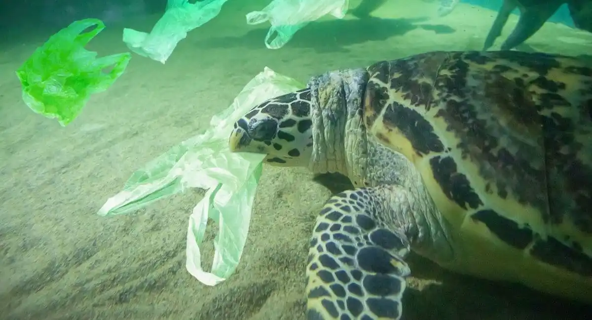

Threats to Turtles
Turtles in Sri Lanka are facing a range of threats, including pollution, poaching, habitat destruction, and overfishing. Sea turtles are particularly vulnerable to these threats, while freshwater turtles are at risk due to dam development and waterway contamination. To protect these creatures and maintain the ecological balance of Sri Lanka's natural resources, measures must be taken.
MORE DETAILS
